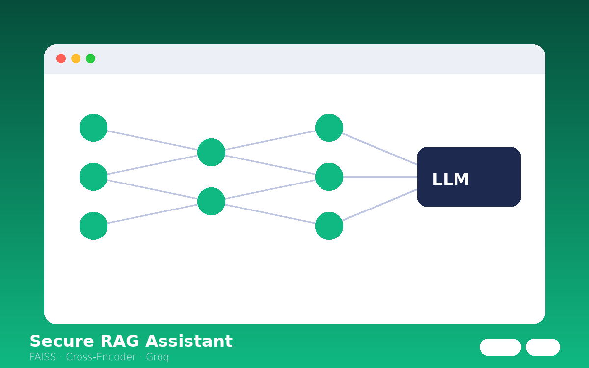
Assistant RAG hybride (FAISS + mots-clés + Cross-Encoder) pour la documentation technique et les incidents IT.
Assistant RH : chatbot RAG, dashboard de KPIs et prédiction du risque de départ (Random Forest).
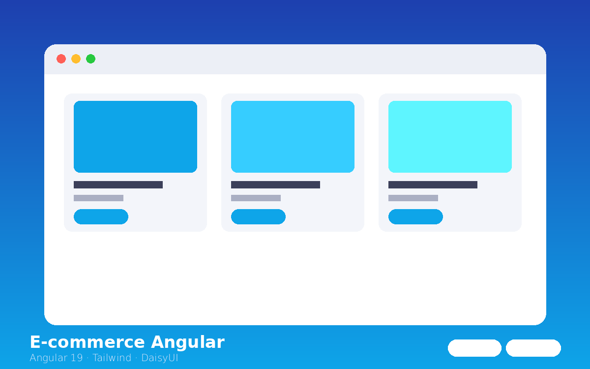
Application e-commerce responsive : catalogue, panier, favoris et modes clair/sombre.
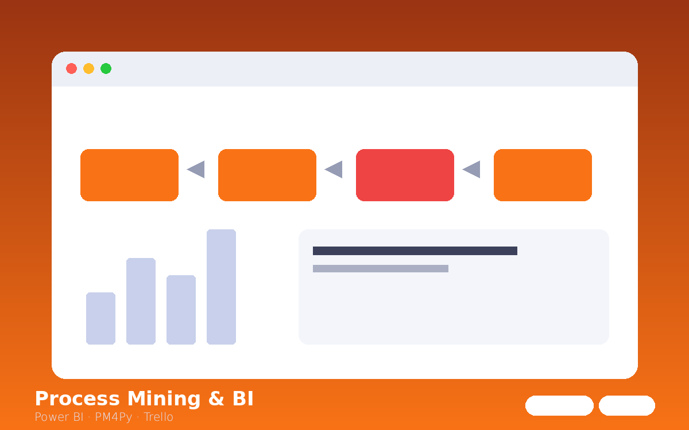
Process Mining et BI pour optimiser un processus de commande e-commerce.
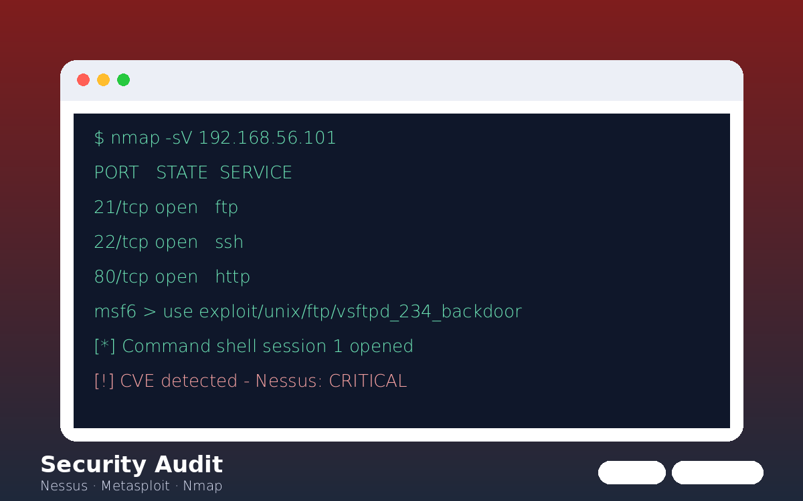
Audit d’une machine vulnérable : Nessus, Metasploit, Nmap et contre-mesures.
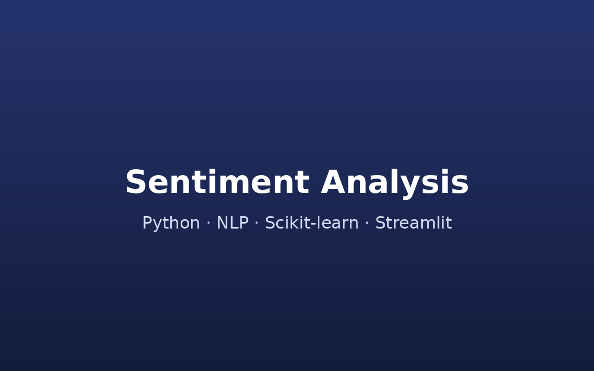
Classification de textes en sentiment positif, négatif ou neutre.
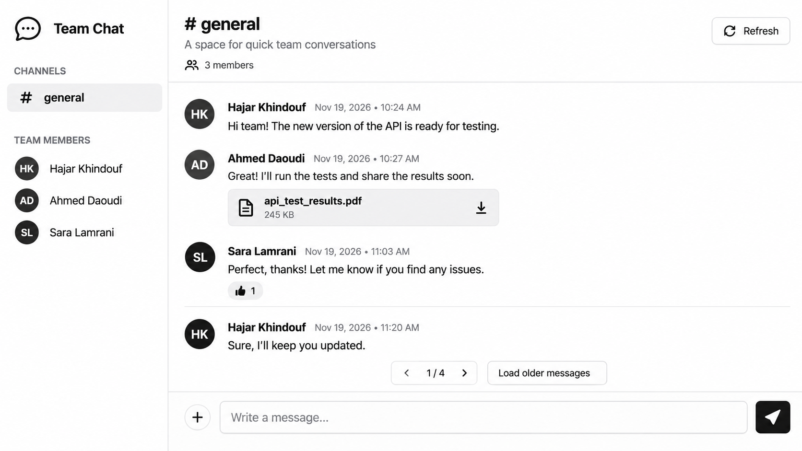
Application de chat avec sondages, tests automatisés, Docker et pipeline CI.
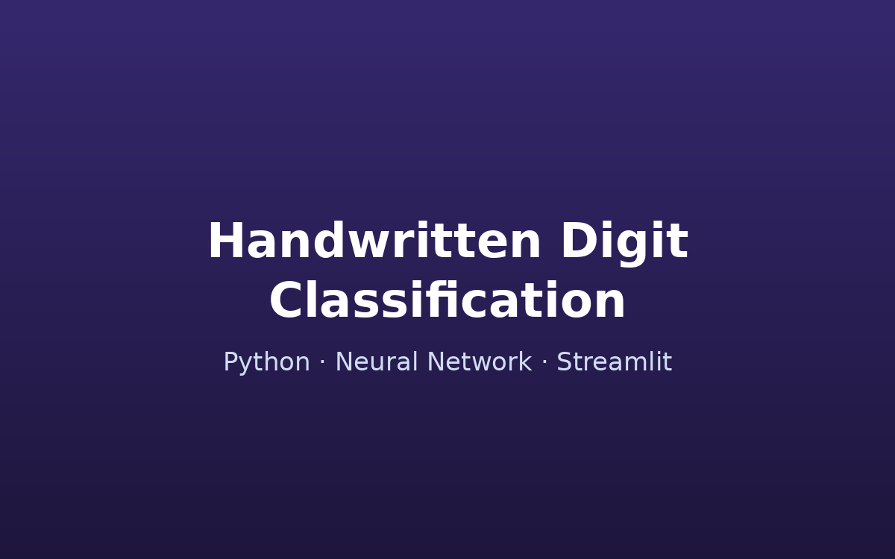
Dessinez un chiffre : un réseau de neurones le prédit avec son niveau de confiance.
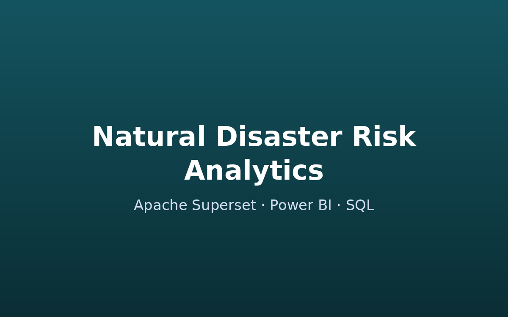
Dashboard interactif analysant l’impact des catastrophes naturelles.
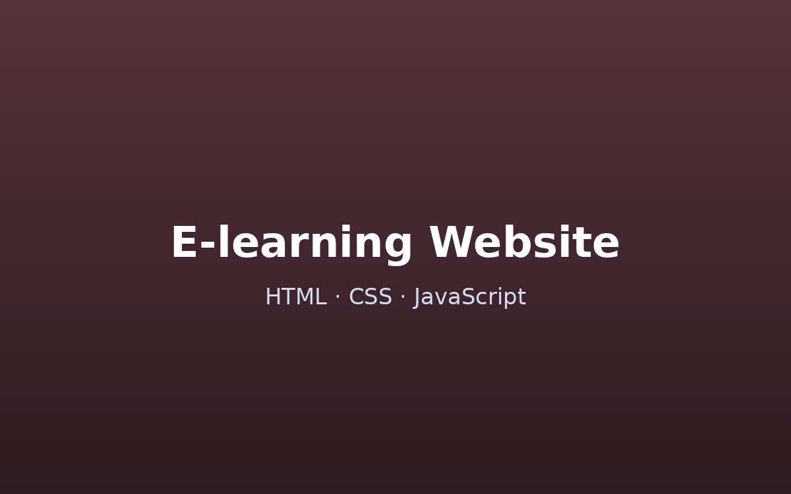
Site d’e-learning réalisé en HTML, CSS et JavaScript.
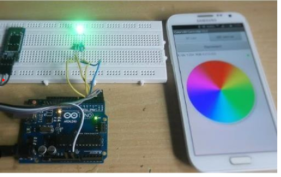
Système d’éclairage RGB à base d’Arduino avec plusieurs scénarios lumineux.
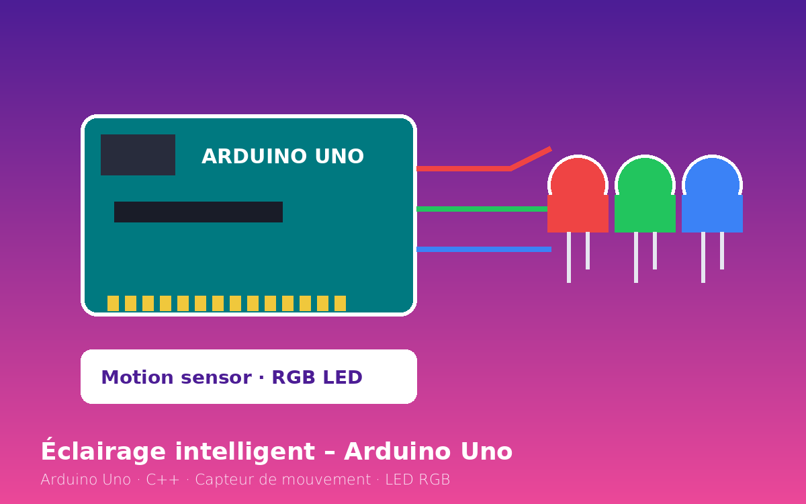
Éclairage automatisé par détection de présence, avec contrôle des LED RGB.
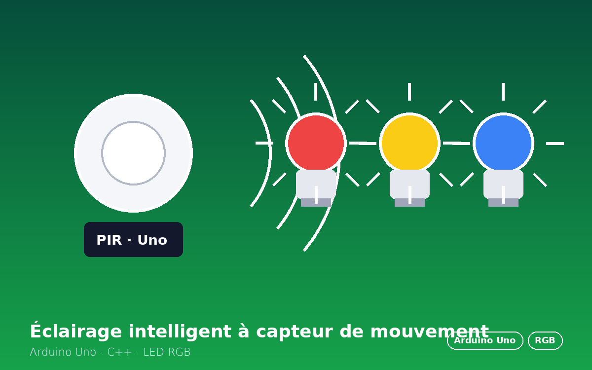
Éclairage automatique par détection de mouvement avec LED RGB.
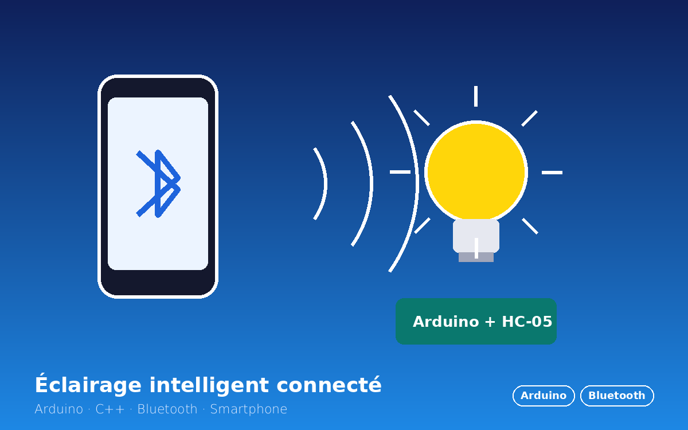
Contrôle à distance de l’éclairage via Bluetooth depuis un smartphone.